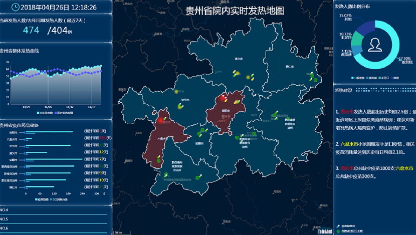
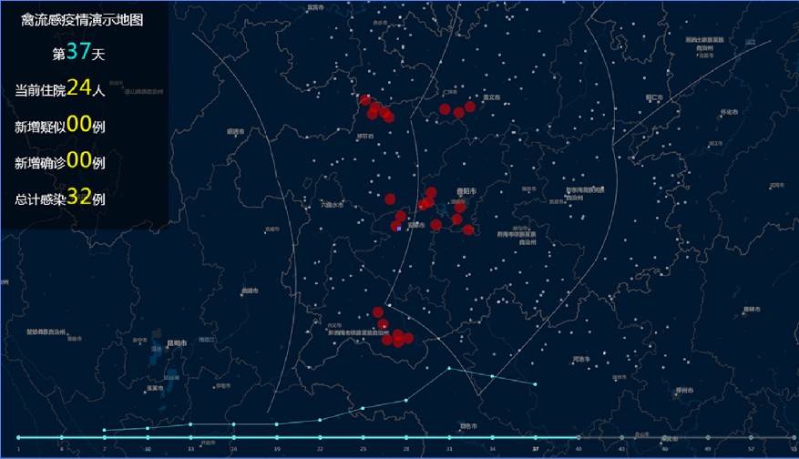

首页
HOME
产品介绍
PRODUCT INTRO
技术方案
TECH SOLUTION
关于我们
ABOUT US
易温
®
EasyTemp
在疫情防控工作中的探索实践
体温，是临床进行感染排查、疫情研判和进一步开展疫情防控工作的基础。通过易温
®
EasyTemp对发热病人体温的动态监测和对病人身份的标记识别，精确采集热量信息。依照疾病
预防控制中心(CDC)发热上报流程，以“有温度的物联网--热量地图”为载体，建立区
域内疫情可视化实时监控和多层级防疫资源协同调度系统，为应对区域内突发公共卫生事
件提供基础性“工具”。
疫情热量可视化
业务逻辑结构化
应用场景模块化
01
热量信息采集
易温
®
EasyTemp的临床应用，特别是基层医疗机构作为疫情感知窗口的底层数据支持。广泛覆盖体温数据接口，为收集全面精准“热量信息”拓宽渠道。
标识识别 精准采集
CDC和医疗机构应用模块部署，建立疫情防控整体信息化操作环境

02
03
技术红利支撑疫情防控
通过易温
®
EasyTemp的广泛部署，掌握个体发热病人的“小信息”，采用“物联网”作为开展疫情防护工作的技术手段。依照CDC发热上报流程，提供符合疫情防控业务逻辑的连接通信能力，实现“体温小信息”收集和“疫情大数据”运用的紧密结合。一旦发生突发事件，不但能快速定位某类群体，同时科学决策被即刻翻译成指令数据下发至医疗机构，实现防疫资源的协同调度，满足感染或疑似感染群体的医疗需求和跟踪跟进。
广泛覆盖 部署有序
独立扩展的业务增值能力，单病种追踪研究

04
4.0时代疫情防控工作的数字化转型
作为某种“疾病”存在的“物”，比如来自易温
®
EasyTemp关于发热的信息，不但可以自我表达和自我解释，同时也是能够演化的。这些关于疾病的信息通过物联网技术接入系统，虽然“疾病”本身不能交谈，但通过这种方式它们可以被其他节点访问，例如一个强大的中央服务器。从而实现与CDC的有效连通，实现防疫资源的协同调度，实现医疗力量纵向到底，横向到边，夯实多层面的医疗卫生服务保障！
Patient to Profession
武汉泰利美信科技有限公司 版权所有
鄂ICP备19026236号
鄂公网安备 42018502004263号


 鄂公网安备 42018502004263号
鄂公网安备 42018502004263号